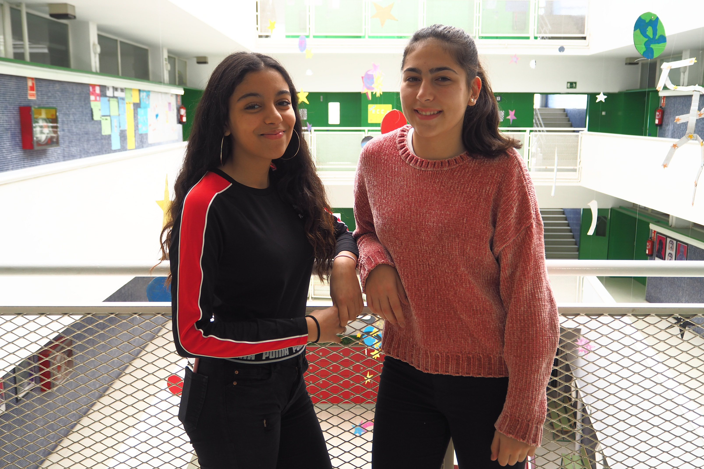

Projecte Migracions'19
Barres i ones
Projecte Migracions'19
Barres i ones
Biografia
Entrevista
Ingredients
Recetes
Alumnes


Hem fet un projecte de migracions el qual consistia en fer una entrevista a algú que venia de fora i, en el nostre cas, hem entrevistat al nostre professor de català, el Ferran. En aquest projecte hem après la diversitat de plats que hi ha, diferents costums respecte la cuina, hem treballat l’edició de vídeo, hem fet una infografia i hem conegut diferents experiències d’immigracions. Desitgem que us agradi!!
Hola sóc Stuard Hidalgo Orquera sóc el que ha fet això.